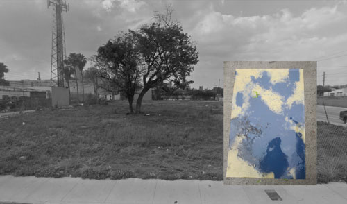

Shoot The Lobster - Miami
70 NW 20 Street
Miami, FL 33127
contact@shootthelobster.com
212-560-0670
www.shootthelobster.com
Ryan Foerster
May 17, 2012 4 - 7 pm
Shoot The Lobster is pleased to announce our inaugural exhibition at Shoot The Lobster – Miami.
Ryan Foerster in Miami
at the invitation of Shoot the Lobster
organized by Bob Nickas
the artist:
b. 1983, Newmarket, Canada.
lives and works in New York.
a photographer who also makes short films, self-published 'zines and catalogs, and has lately incorporated found objects in his installations with photos and printing plates.
the project:
to create an on-site installation for a vacant lot in Miami.
the curator:
will try not to get in the way of the artist, or take credit for any of the artist's ideas and hard work. when asked what he was planning to do in Miami,
Foerster wrote:
"hmmm, i just got to studio to go through some work for it. its going to be a mix of printing plates, probably ones from the garden, some found metal that look like printing plates. some photos ... probably compost ones and b&w of the garden here. i have a few photos on the roof that i mounted on some found metal I'm hoping work out. i think the plates will look good because you can see both sides if i wedge them in between things or have them up against the fence or in the tree. probably some photograms that are those designs on the window bars. i think if i walk around there i should be able to find some good stuff for it ... maybe some wood to put photos on. i'll probably bring a few things from other walks I've gone on in other places that could look like they were already there. maybe some of the 'slag' rocks i have. i'll just bring more then enough and edit. some of the work i guess will be getting made during the course of the show or changing, which is exciting. was just looking at the google map of it. i like those pavement patches that are there also. I'm off to see that bill bollinger show. i went to the one last night really cool casts of the ground.”
Foerster has exhibited at:
Martos Gallery in New York (2012), a two-person show with Ben Schumacher; Art Metropole, Toronto (2011); a group show at Triple V, Paris, France (2011); ribordy contemporary, Geneva, Switzerland (2010); Printed Matter Inc., New York (2009); the Swiss Institute, New York (2008); Allmanna Galleriet, Stockholm, Sweden (2008); White Columns, New York (2007); Alphaville, Melbourne, Australia (2006).
A book of Foerster's photographs and printing plates is forthcoming from Hassla, with an introductory text by Bob Nickas.
70 NW 20 Street
Miami, FL 33127
contact@shootthelobster.com
212-560-0670
www.shootthelobster.com
Ryan Foerster
Organized by Bob Nickas
May 17, 2012 4 - 7 pm Shoot The Lobster is pleased to announce our inaugural exhibition at Shoot The Lobster – Miami.
Ryan Foerster in Miami
at the invitation of Shoot the Lobster
organized by Bob Nickas
the artist:
b. 1983, Newmarket, Canada.
lives and works in New York.
a photographer who also makes short films, self-published 'zines and catalogs, and has lately incorporated found objects in his installations with photos and printing plates.
the project:
to create an on-site installation for a vacant lot in Miami.
the curator:
will try not to get in the way of the artist, or take credit for any of the artist's ideas and hard work. when asked what he was planning to do in Miami,
Foerster wrote:
"hmmm, i just got to studio to go through some work for it. its going to be a mix of printing plates, probably ones from the garden, some found metal that look like printing plates. some photos ... probably compost ones and b&w of the garden here. i have a few photos on the roof that i mounted on some found metal I'm hoping work out. i think the plates will look good because you can see both sides if i wedge them in between things or have them up against the fence or in the tree. probably some photograms that are those designs on the window bars. i think if i walk around there i should be able to find some good stuff for it ... maybe some wood to put photos on. i'll probably bring a few things from other walks I've gone on in other places that could look like they were already there. maybe some of the 'slag' rocks i have. i'll just bring more then enough and edit. some of the work i guess will be getting made during the course of the show or changing, which is exciting. was just looking at the google map of it. i like those pavement patches that are there also. I'm off to see that bill bollinger show. i went to the one last night really cool casts of the ground.”
Foerster has exhibited at:
Martos Gallery in New York (2012), a two-person show with Ben Schumacher; Art Metropole, Toronto (2011); a group show at Triple V, Paris, France (2011); ribordy contemporary, Geneva, Switzerland (2010); Printed Matter Inc., New York (2009); the Swiss Institute, New York (2008); Allmanna Galleriet, Stockholm, Sweden (2008); White Columns, New York (2007); Alphaville, Melbourne, Australia (2006).
A book of Foerster's photographs and printing plates is forthcoming from Hassla, with an introductory text by Bob Nickas.
Shoot The Lobster Headquarters:
540 West 29th Street New York, NY 10001
For further information please contact
contact@shootthelobster.com or 212-560-0670